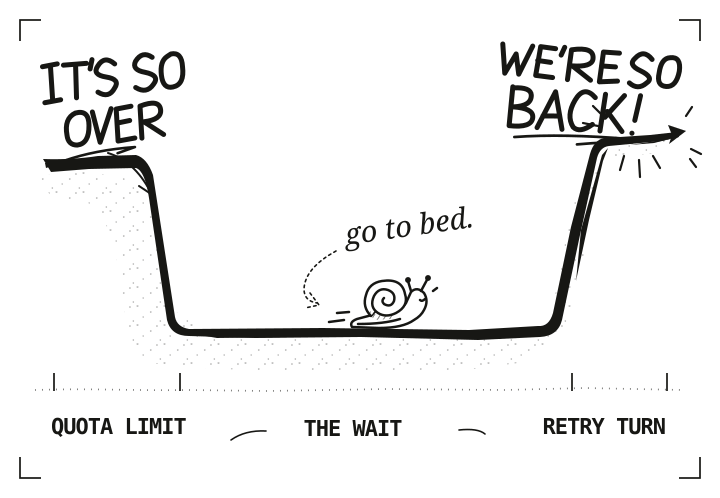

We’re So
Back
OpenCode plugin. When your subscription hits its usage limit, it waits for the reset and retries the same turn.

Install
Works with Claude Max (via opencode-with-claude), ChatGPT/Codex and OpenCode Go.